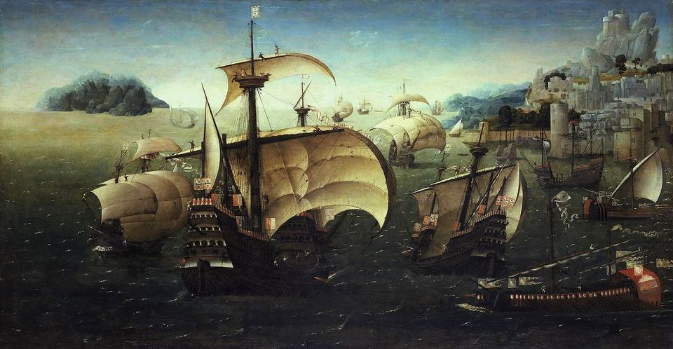

Kapitel 1
10 afsnit
ca. 3000 f.v.t. til i dag
Portugals historie
Portugal i verden gennem tusindvis af år
Portugal er et lille land, men portugiserne har sat spor i næsten hele verden. Forløbet går fra romere og arabere over opdagelsesrejser og slavehandel til Salazars diktatur og nellikerevolutionen i 1974.